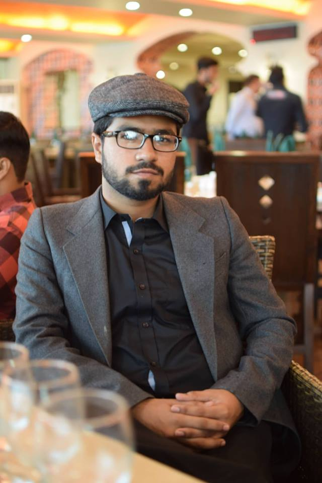

| Roll no | F16SW92 | |
| Firstname | Ali Mujtaba |  |
| Lastname | Memon | |
| Age | 23 | |
| Contact | 0335-3911190 | |
| CNIC | 43304-3829521-7 | |
| About | Hey! my name is Ali Mujtaba and I am a Software Engineer, Done my graduation from Mehran Unversity of Engineering & Technology.
I am Full Stack Software Engineer, I do it for my Career satisfaction.
I have Expertise in various fields of Software Engineering. So far I have learned Web Application Development, Desktop Application Development, Android Development, Graphic Designing, Networking (Routing Switching, Troubleshooting), Artificial Intelligence, Machine Learning & Data Science across different platforms and trending tools in market. I like to cook also, partially I compose my own music, I love listening to Opera Music. Yeah I also like to read books but not so Much |
|
| Education | B.E Software Engineering from MUET, Jamshoro, Sindh. 2016 - Present |
|
| Skills | Web Development Skills PHP, MySQL, PHP OOP, Laravel, Code Igniter, HTML5, CSS3, JavaScript, JQuery, ES6, JSX, Reactjs, Nodejs, Wordpress, CPanel, Server Deployment (Apache & Node) Technical Skills Data Structures, Algorithms, Software Project Management. Design Skills Prototype Designing, Balsamiq Mockups, Proto.io, Web Graphic Designing, Solution Designing algorithmically. Soft Skills Critical thinking, Decision making, Problem Solving, Independently working, Leadership Skills, Managerial Skills, Communication Skills |
|